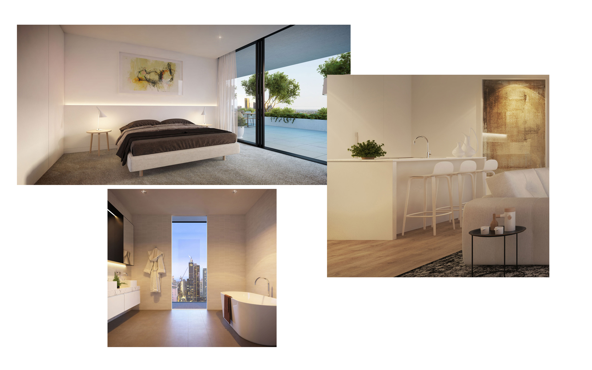

<div class="pages">
  <div data-page="features" class="page no-toolbar no-navbar">
    <div class="page-content">
    
	<div class="navbarpages graybg">
		<div class="navbar_left">
			<div class="logo_text"><a href="index.html"></a></div>
		</div>			
		<a href="#" data-panel="left" class="open-panel">
			<div class="navbar_right"></div>
		</a>
						
	</div>
     
     <div id="pages_maincontent">
      
	  
    <div class="page_single layout_fullwidth_padding">  
	  
    <ul class="features_list_detailed">

          <li>
          <div class="feat_small_details">
          <h4><a href="#">The Sky is waiting for You.</a></h4>
          <a href="#">It’s easier to reach for the stars when your home is in the clouds. From the lofty perch of the 420 Spencer penthouse, you can live your life against the backdrop of Melbourne’s ever-changing cityscape, with views that are just a bit too beautiful — a bit too dynamic — to ever lose their magic.</a>

          </div>
          </li> 

          <li>
          <div class="feat_small_details">
          <h4><a href="#">The Laid-Back Luxury of Intuitive Interiors</a></h4>
          <a href="photos.html">With intuitive spaces designed for ease of movement and tactile surfaces crafted from quality materials, the interiors of 420 Spencer impart an inherent sense of luxury to all of your daily movements.</a>
          </div>
                                       

          </li> 
          
          <li>
          <div class="feat_small_details">
          <h4><a href="#">A World Above Ordinary Experience</a></h4>
          <a href="#">To live in the penthouse of 420 Spencer is to live a life of unparalleled luxury. This home atop the world transcends modern apartment living to become an expansive private sanctuary overlooking the city, with materials such as engineered timber flooring and granite benchtops ensuring the feeling of luxury extends all the way from the eyes to the fingertips..</a>
          </div>
          </li> 
		  
          
          
          <li>
          <div class="feat_small_details">
          <h4><a href="#" class="external">Everything in it Right Place</a></h4>
          
          <a href="#" class="external">Penthouse bathrooms make it easy to live a life less cluttered, with ample invisible storage ensuring everybody has space to house their precious items. Between thoughtfully separated sinks, abundant cupboard space and generous floor plans, it has never been easier to live side-by-side.</a>
          </div>
          </li>	  
		  <br/>
                           

          
      </ul>
       </div>
	   
	   
      </div>
      
      
    </div>
  </div>
</div>